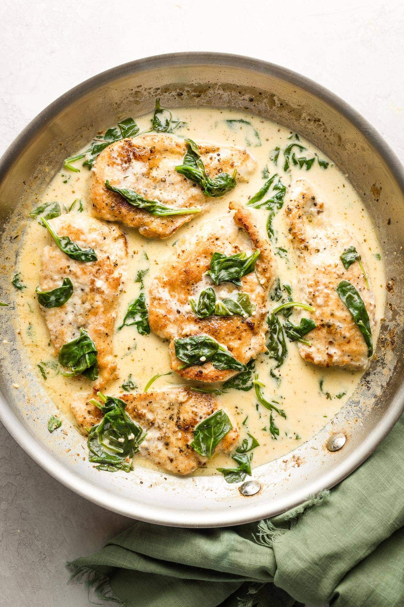

Chicken Florentine

Description:
Chicken Florentine, with perfectly-seared boneless chicken breasts in a creamy white wine and spinach sauce, is a complete, one-skillet dinner.
This chicken Florentine recipe “tastes like a special occasion dish (because of loads of cream and cheese) or therapy in food form,” according to recipe developer Renu Dhar.
Ingredients:
- 1/4 cup all-purpose flour
- 3/4 teaspoon kosher salt, divided
- 2 (10-oz. each) boneless, skinless chicken breasts, cut in half horizontally
- 2 tablespoons unsalted butter
- 1 tablespoon olive oil
- 1/2 cup dry white wine
- 3/4 cup chicken stock
- 3/4 cup heavy whipping cream
- 1/2 teaspoon freshly ground black pepper
- 1/2 teaspoon garlic powder
- 1/4 teaspoon dried oregano
- 1/8 teaspoon dried thyme
- 1/8 teaspoon dried marjoram
- 1 (5-oz.) package fresh baby spinach (about 4 cups packed)
- 1/4 cup roughly chopped fresh basil
- 1 ounce Parmesan cheese, finely shredded (about 1/4 cup)
Steps:
- Gather all ingredients.
- Stir together flour and 1/4 teaspoon of the salt in a medium bowl. Add chicken cutlets, one at a time, and toss to coat evenly with flour. Shake off excess flour, and set aside on a plate.
- Heat a large skillet over medium-high. Add butter and oil; cook, swirling occasionally, until butter is frothy, about 30 seconds. Add chicken in an even layer; cook, turning once halfway through, until browned and a thermometer inserted into thickest portion of breast registers 165°F, about 8 minutes. Transfer to a wire rack.
- Add wine to skillet; cook over high, stirring occasionally and scraping bottom to release brown bits, until reduced by half, about 1 minute. Stir in stock, cream, black pepper, garlic, oregano, thyme, marjoram, and remaining 1/2 teaspoon salt. Bring to a simmer over medium-high; cook, stirring occasionally, until slightly thickened, about 4 minutes.
- Stir in spinach; cook, stirring often, until spinach is wilted, about 1 minute.
- Return chicken to skillet. Cook over medium-high, turning chicken once, until chicken is heated through, about 1 minute. Remove from heat; add basil and Parmesan, swirling to combine.